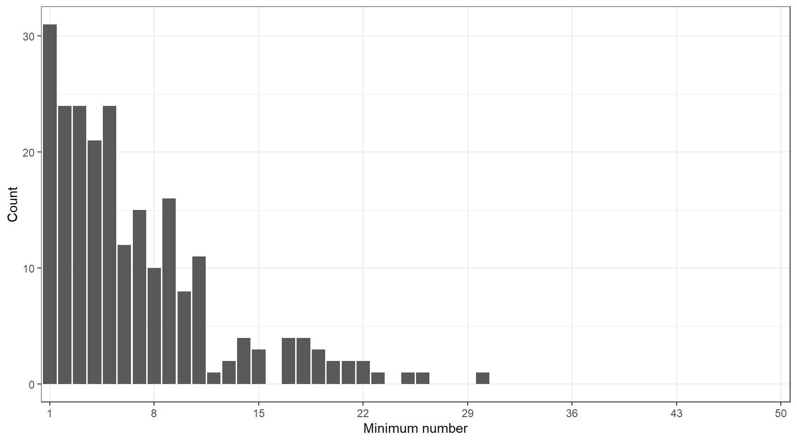

3 Numerical and graphical summaries
3.1 Packages
library(tidyverse)
library(lubridate)
theme_set(theme_bw())3.2 Load the data
lottomax_wide <- readRDS("./data/lottomax_wide.RDS")
lottomax_wide## # A tibble: 221 x 11
## year date result num1 num2 num3 num4 num5 num6 num7 bonus
## <fct> <date> <chr> <int> <int> <int> <int> <int> <int> <int> <int>
## 1 2019 2019-05-14 9 24 27 33 ~ 9 24 27 33 40 44 48 41
## 2 2019 2019-05-17 4 21 23 39 ~ 4 21 23 39 40 42 50 17
## 3 2019 2019-05-21 2 3 8 18 31~ 2 3 8 18 31 39 50 33
## 4 2019 2019-05-24 9 11 15 19 ~ 9 11 15 19 20 35 41 28
## 5 2019 2019-05-28 4 9 10 26 2~ 4 9 10 26 27 29 37 14
## 6 2019 2019-05-31 6 29 34 39 ~ 6 29 34 39 42 47 50 22
## 7 2019 2019-06-04 7 19 22 28 ~ 7 19 22 28 34 41 42 12
## 8 2019 2019-06-07 4 8 13 23 2~ 4 8 13 23 25 33 39 17
## 9 2019 2019-06-11 18 23 28 32~ 18 23 28 32 34 44 50 29
## 10 2019 2019-06-14 4 11 20 22 ~ 4 11 20 22 37 44 49 13
## # ... with 211 more rowslottomax_long <- readRDS("./data/lottomax_long.RDS")
lottomax_long## # A tibble: 1,768 x 5
## year date result role number
## <fct> <date> <chr> <chr> <int>
## 1 2019 2019-05-14 9 24 27 33 40 44 48 41 num1 9
## 2 2019 2019-05-14 9 24 27 33 40 44 48 41 num2 24
## 3 2019 2019-05-14 9 24 27 33 40 44 48 41 num3 27
## 4 2019 2019-05-14 9 24 27 33 40 44 48 41 num4 33
## 5 2019 2019-05-14 9 24 27 33 40 44 48 41 num5 40
## 6 2019 2019-05-14 9 24 27 33 40 44 48 41 num6 44
## 7 2019 2019-05-14 9 24 27 33 40 44 48 41 num7 48
## 8 2019 2019-05-14 9 24 27 33 40 44 48 41 bonus 41
## 9 2019 2019-05-17 4 21 23 39 40 42 50 17 num1 4
## 10 2019 2019-05-17 4 21 23 39 40 42 50 17 num2 21
## # ... with 1,758 more rows3.3 Plan
From the wide data:
- Most frequent minimum (
num1), most frequent maximum (num7) - Summary statistics for the minimum and maximum
- Distribution of numbers for each slot, i.e.
num1,num2, ...,bonus - Distribution of the sum of the seven main numbers
- Sum of the seven main numbers with respect to time
From the long data:
- For the sake of illustration, repeat everything that was done for the wide data
- Most frequent numbers in a given month
- Co-occurrences
3.4 Wide data
3.4.1 Most frequent minimums and maximums - overall
min_counts <- lottomax_wide %>%
count(num1) %>%
arrange(desc(n))
head(min_counts)## # A tibble: 6 x 2
## num1 n
## <int> <int>
## 1 1 31
## 2 3 24
## 3 5 24
## 4 2 23
## 5 4 21
## 6 9 16The drawn numbers should be treated as factors when plotting since these are discrete values. Note that they are converted to factor when plotting, but we are not modifying the supplied data. If the drawn numbers were instead treated as continuous values, the axis would start at zero which would not only look "off", but is not entirely useful since the numbers that are being drawn are between 1 and 50 (inclusive).
The bar graph will make use of geom_col rather than geom_bar since we have the counts already.
geom_bar would be used when we need to obtain counts from the data before making the bars.
ggplot(min_counts, aes(x=factor(num1), y=n))+
geom_col()+
labs(x="Minimum number", y="Count")Although it would be preferable to reduce some of the vertical gridlines, we should note that some numbers have actually never occurred as the minimum, i.e. the numbers appearing on the x-axis are not consecutive. If we wish to reduce some of the gridlines, we need to make sure that all numbers from 1 to 50 are appearing on the x-axis.
We can fill in the unobserved numbers using the complete function found within the tidyr package.
min_counts_complete <- min_counts %>%
complete(
num1 = full_seq(1:50, period=1),
fill = list(n = 0)
)ggplot(min_counts_complete, aes(x=factor(num1), y=n))+
geom_col()+
labs(x="Minimum number", y="Count")
Now reusing the same graph as above, let's reduce some vertical gridlines.
ggplot(min_counts_complete, aes(x=factor(num1), y=n))+
geom_col()+
scale_x_discrete(breaks=factor(seq(1, 50, 7)))+
labs(x="Minimum number", y="Count")
Now let's repeat the same thing for the maximum number of each draw.
max_counts <- lottomax_wide %>%
count(num7) %>%
arrange(desc(n))
head(max_counts)## # A tibble: 6 x 2
## num7 n
## <int> <int>
## 1 50 31
## 2 49 25
## 3 48 23
## 4 46 20
## 5 44 17
## 6 47 16ggplot(max_counts, aes(x=factor(num7), y=n))+
geom_col()+
labs(x="Maximum number", y="Count")
max_counts_complete <- max_counts %>%
complete(
num7 = full_seq(1:50, period=1),
fill = list(n = 0)
)ggplot(max_counts_complete, aes(x=factor(num7), y=n))+
geom_col()+
scale_x_discrete(breaks=factor(seq(1, 50, 7)))+
labs(x="Maximum number", y="Count")